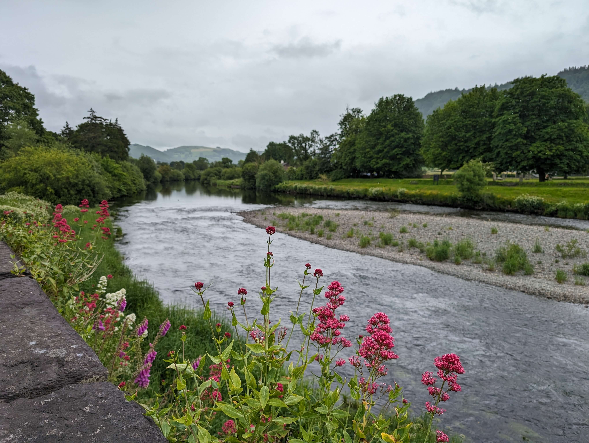

Openscapes update from Julie Lowndes, summer 2024
Hi friends, this is a status update about Openscapes — all good things as we’ve evolved structurally this year while concurrently supporting open science via leading cohorts with partners, sharing via talks & writing, and maintaining stability for mentor learning communities. It has also been a lot. Like everyone, I have been consumed with the weight of everything going on in the world, local and global, including wildfires growing nearby my house right now. My theme this year is “default to open” as I grow as a leader in the same way I do as a scientist. This post feels like a long time in the making in that lens. But it has been great to share about different pieces of this with some of you, and it feels really good to document it all more here. I hope you’re all doing ok, and please get in touch - my best email is julia at openscapes.org. Cheers, Julie Lowndes.
OPENSCAPES ETHOS
Openscapes is an approach and community that helps researchers and those supporting research find each other and feel empowered to conduct data-intensive science. We support open science as “kinder science for future us”: the vision is a scientific culture that is more efficient, more kind, and more collaborative, and that can uncover solutions faster together to the most pressing climate and social challenges. Our main activity is mentorship to build open source technical and collaborative leadership skills within and across teams and organizations, connecting groups and role-modeling open practices that are critical elements to helping shift towards open science. All our lessons, curriculum, writing (blog posts, peer reviewed publications, slides, etc) are open source and shared publicly online – using the same tools we teach for data analysis and reproducible reports (GitHub, Quarto/RMarkdown, R, Python, Jupyter, Google Drive). We believe role-modeling open practices is critical to helping teams shift towards open science.
Openscapes is motivated by a question: What if we connected our skills & values in our daily work, for solutions to our most pressing climate challenges? We work with actionable science teams at agencies like NASA Earth Science, NOAA Fisheries, EPA, California Water Boards, academic and non-profit groups like the Fred Hutch Cancer Center, Black in Ecology, Evolution, and Marine Science and Black in Marine Science. In our work we think that combining data science with open science with teamwork & community, is a way for us all to help address our climate emergency. As Ayana Elizabeth Johnson and Katharine Wilkinson say in the book All We Can Save: “To address our climate emergency, we must rapidly, radically reshape society. We need every solution and every solver”.
IGNITING REAL CULTURE CHANGE ACROSS SCIENCE
We are seeing real culture change across science through the Openscapes approach. This is a big deal and something I am really proud of. Change shows up as real improvements in how individuals, teams, and organizations operate. We see researchers’ daily efficiency and wellbeing benefit whole organizations since there is less time wasted, errors are identified and fixed earlier, and staff have less burnout and turnover. Through the Champions Program, we’ve seen a senior administrator who had participated for weeks on mute suddenly unmute, lean forward, and say “I need that, can you teach me?” when a colleague was screensharing their workflow for automating data-intensive reports. Through NASA Openscapes co-led with Erin Robinson, we have changed the way NASA teaches how to access Earthdata in the cloud. With NASA, NOAA, and the California Water Boards, we are supporting within-government open source community development that flourishes across historical institutional silos: examples include the earthaccess python library, Dr. Eli Holmes’s new 3-year position as NOAA Fisheries Open Science Lead, and the California Environmental Protection Agency’s (CalEPA) open data strategy (see the upcoming July Executive Director Report: https://www.waterboards.ca.gov/board_info/exec_dir_rpts).
2023 marked 5 years of Openscapes! We have done and learned a lot – look out for an upcoming blog post with more details. But to share some – in early 2024, Openscapes was mentioned in the White House Fact Sheet as the Biden-Harris Administration Marks the Anniversary of OSTP’s Year of Open Science! We’ve led 155 science teams through our flagship Champions program, upskilled 90 Mentors across several government organizations, and welcomed 120 Black marine and environmental scientists to Open Science through the Pathways Program. We’ve also led two years of the Reflections program, a lower-commitment way for people to participate in Openscapes and build open science skills. But real culture change is less about us leading events and more about the Openscapes approach and Flywheel spinning around the world as people practice, reuse, and teach it themselves. Openscapes has been successful because we are small, independent, and outside the organizations we work with, and teaching approaches that can be incorporated within organizations (for example with the CalEPA). We are keeping that going.
AN OPEN SOURCE COMMUNITY
I’ve come to think of Openscapes itself as an open source community, which yes, might be obvious, and was the goal all along. But I realize it actually is. We as a community — and linked to many other communities all along the open spectrum — are all role modeling open, living open science as a process and daily activity (not only a product at the end), and bringing reuse and extension as a value of open. It’s happening!
Part of the community being open source is that all our resources are open source; you’re welcome to them. We think of the Flywheel as an open source tool — I reach for the Flywheel when we are planning, designing programs, communicating impact, just as I reach for R and Quarto and JupyterHubs when I am doing data analysis. We also invest heavily in open documentation: through the Champions Lesson Series resources and the Approach Guide that document how we work and facilitate – these are other open source resources to reuse and extend, the way you would an R or Python package. It takes real work and time to make things open – that means posting on YouTube and formatting for GitHub rather than a PDF sitting in a corner of our laptops. Funding supports our time working with partners, and also invests in this work to keep the Flywheel going.
“Forking” is a concept from GitHub and software programming where you can copy someone’s work into your own space to reuse/remix/extend it. It is still attached to the original source so that you can be connected, give credit, and also contribute back, if your changes might be useful to the original project. We are thrilled to see people “forking Openscapes” like teaching from each other’s slide decks, copying live notes and agenda structure, and reusing Champions cohorts and event structure to better suit audiences, like the CalEPA has done.
OUR CORE TEAM
Openscapes has an intentionally small core team. As we have grown, we have tried to keep a deliberately flattened organizational structure that works effectively and has the impact of a much bigger team. We define the core team right now as people who are paid directly from Openscapes funds (grants & contracts). Sustainability of people’s workload and financing is front of mind. Outside of me (aiming for 90% time), team members work up to 50% time, with everyone working as much as they want to. Our core team has shifted this year, and you’ll see these changes reflected in our website too.
First, a huge thank you to Erin Robinson, who was instrumental in growing Openscapes into a sustainable initiative via her expertise in strategic sustainability planning and her leadership with the NASA Earthdata community. Erin Robinson has shifted off the core team: she is currently finishing her PhD in Information Science focused on knowledge infrastructures for Earth and environmental science applications and consulting with her company Metadata Game Changers. I have learned so much working together with Erin, it could be a whole book in itself. I’m so proud of the Openscapes Flywheel we developed together and that Jim Collins responded to us saying he was excited about our work when we shared our 2023 Earth Science Data Systems Working Group (ESDSWG) slides! Erin, I can’t wait to see what you do and where you take this all next, and continue to stay connected with us all.
Growing our team, we’ve welcomed two new team members: Liz Neeley and Andy Teucher! Both Liz and Andy have backgrounds as environmental scientists, so they are closely connected with researchers and understand deeply the challenges and opportunities as we work with teams, and are huge wonderful additions to the Openscapes Community.
Liz Neeley brings a deep background of science communication and sense making, and is supporting me as well as NASA Mentors. The first thing we did together is Liz helped design a hiring rubric and interview conversation guides for our cloud position with 26 applicants earlier this year — this is something I had never done before and I learned a lot (blog post upcoming!) Liz is also a founding partner of the new initiative Liminal, which is a science communication collective. I am proud to say that I am part of the collective, alongside some amazing leaders. Liz and I have already co-chaired a workshop with the NIH National Libraries of Medicine, and I shared some of Openscapes’ work in environmental and Earth science communities. I am excited to contribute, learn, connect, and bring back what I learn to the Openscapes community.
Andy Teucher is a data scientist and open source developer and teacher, and has been focused on cloud infrastructure with NASA Openscapes. In just a few short months already he has identified ways to lower costs for cloud computing and storage. And, making this immediately actionable, he has taught tutorials on technical and policy approaches to reduce costs for scientists and JupyterHub managers, which is so awesome. Andy is continuing to document this and identify other ways to contribute to reduce friction for users learning to access and use NASA Earthdata in the cloud. A current focus is on “fledging” — where do researchers go to do their real science once they have tested whether the Cloud is right for them through our 2i2c JupyterHub? (Look out for a blog post following our July ESIP session!)
Stefanie Butland and Ileana Fenwick and I continue to work closely together, across Openscapes activities. Ileana led the second annual Pathways to Open Science program with co-leads Aneese Williams and Alex Davis earlier this year, reusing what worked and extending the program activities. Ileana, Stef and I led the second year of the Reflections Program as well, and are excited to continue to have new channels and sponsorship so people have friendly entryways to engage with open science. Stefanie has led more and more core activities, doing all setup for Champions Cohorts, teaching lessons, supporting NASA mentors and coworking, and designing and leading the new Quarto + GitHub Contributing Clinic. Look out for Stef’s talk at posit::conf next month about how we use Sean Kross’s Kyber R package to save time and reduce manual errors in Champions Cohorts setup!
All of us work closely with Mentors and Champions and others in the greater Openscapes and open science community, and we appreciate you!
STRUCTURE
In 2022 I started Openscapes LLC as a mechanism to administer funds to support the Openscapes open source community. In my mind, the LLC is not synonymous with all the Openscapes community work described above, it is one piece supporting the community. Openscapes LLC is a value-driven vehicle to try to support open science as a career – a sustainable and lasting career — for myself and for others. An LLC was a mechanism that was possible for me. I do sometimes feel like I have to justify this choice, and I push back on the idea that companies are inherently bad or that non-profits uniquely embody the values of open science (see Chris Hartgerink’s eloquent post about this (Not-)for-profit in research). I see many people wondering how to make open science a sustainable job and we need more pathways – it’s important to be able to explore and discuss mechanisms together as an open community. So how is Openscapes LLC value-driven? We are not motivated by profit. We pay people for their time, we pay quickly, and aim to pay them well. We can work pro-bono at times to collaborate with partners, as we do with the Pathways for Open Science Program. We can also donate to causes aligned with our values. Since we believe that open science plays a critical role in climate solutions, we joined 1% for the Planet and starting later in 2024 will donate at least 1% of revenue each year to environmental non-profits. This will be small, but small numbers matter, as does visibly connecting our values with how we work.
And, I am now full time at Openscapes LLC! In May 2024 I shifted to an affiliate position at NCEAS/UC Santa Barbara, after working as a Project Scientist there for 11 years (2013-2024). I love the community and teams at NCEAS - the Ocean Health Index in particular as my open science origins (see 2021 SORTEE slides) along with the admin staff. From undergrad to PhD to NCEAS, I have been at universities since 1999, and this is a big shift for me. And I also feel prepared as I continue developing as a scientist, open science champion, feminist, anti-racist, and human, throughout all these years with all the people I have learned from and worked with along the way. So some underlying structure of my situation has changed, but Openscapes’ momentum is unchanged.
Being a small business owner and designing Openscapes values into the business structure is something I am really proud of. It feels different in some ways compared to being a scientist, but in fact I am solidly both. It has been a lot of work to build and manage a company and I continue to learn really important skills to support the work — and I have not done it alone! I so greatly value my accounting & contracts team, as well as my leadership coach and advisors. And so many practical conversations from people I admire in this community. And, I think that Openscapes LLC is a step. I would like the mechanism to administer funds on the back end to match the community approach on the front end. I am eyeing a collaborative structure in a not-too-distant future, and have talked with some of you about this already (and I am learning from Liminal this way as well). However, we’ll take it one step at a time. We are dedicated and in this for the long-haul: Openscapes LLC is a “keepgoing”, not a startup, to borrow language from open source community lead Greg Wilson.
QUESTIONS WE’RE PONDERING
We are deeply interested in the “so what” of open science. So teams are more efficient and morale is higher, science is more reproducible, data are more FAIR. So what – is response to wildfires faster, with partners and residents better informed due to open data and sharing? Are communities developing solutions to water management also working on the other side of the world due to trust built and amplified? In my own neighborhood, I see wildfire communications vastly improved because of open data, and groups sharing information and visualizations openly. Fewer neighbors message to ask “where/how big”? And the conversations shift to what to do and how to help each other. This is because they can see the data easily themselves and are informed. I am ready for Openscapes to contribute to stories like these, for the Flywheel to spin for climate and social solutions. We’re in a moment where open science is still “new”, shifting from its early adopter moment to the early majority, so it feels early and energizing and new. And, at the same time, people have been working on this for decades, and there is an impatience for us to really gain traction and identify and tell these stories to connect us and unite us in hope and action due to all that we’ve done with open science. It’s about people, and we’re ready.
I’ll end here for now, thank you for reading. There is so much more learned and on my mind and plate and I look forward to continue collaborating and making a difference with you all. I’m nothing but excited for going forward together.

Citation
@online{lowndes2024,
author = {Lowndes, Julie},
title = {Openscapes Update from {Julie} {Lowndes,} Summer 2024},
date = {2024-07-18},
url = {https://nasa-openscapes.github.io/blog/2024-07-18-openscapes-update},
langid = {en}
}